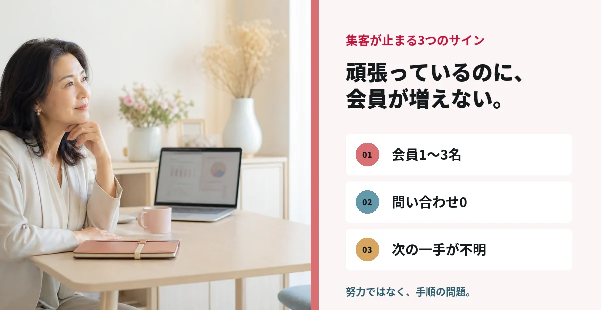
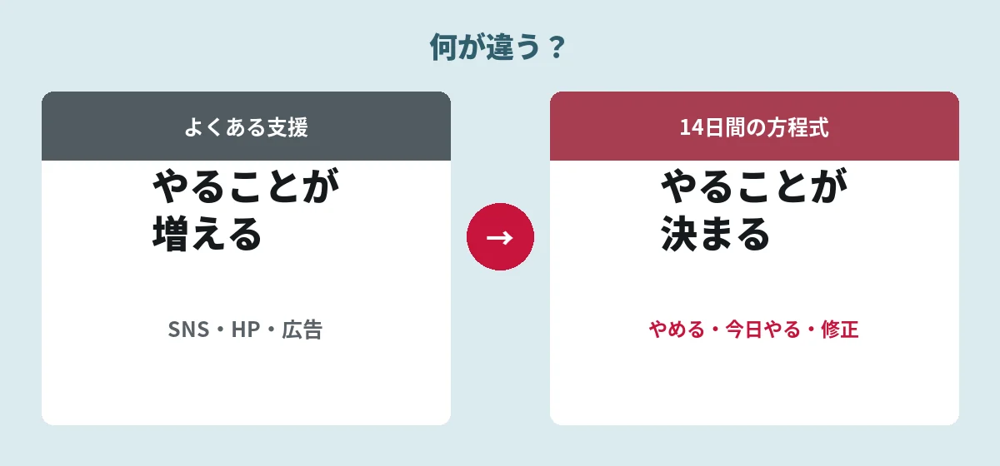

結婚相談所オーナー向け 会員10名以下からの集客改善
加盟した。でも、会員が増えない。
会員10名までの、具体的な一歩が見つかる。
14
日間で
会員獲得の
「動き方」を変える。
「動き方」を変える。
足りないのは、努力ではなく「手順」です。
LINEで無料集客診断を受ける
加盟連盟不問／オンライン対応／無理な勧誘なし

結婚相談所経営30年仲人 齋藤 弓子
Amazon6部門1位
一人で0→100名規模へ
30年相談所経営
0→100名一人で拡大
6部門1位Amazonベストセラー
※実績数値は打ち合わせ時の申告内容です。最終公開前に期間・部門名・証憑を確認します。
DOES THIS SOUND LIKE YOU?
こんなに頑張っても、
なぜ増えない？
原因は、努力不足ではありません。

NOT ANOTHER GENERIC ADVICE
やることを、
増やさない。
必要なのは「頑張る」ではなく「決める」こと。


YOUR CONSULTANT
ゼロから、
相談所を育ててきた。
一人で0→100名へ。現場で試した方法だけを。
結婚相談所オーナー専門コンサルタント齋藤 弓子YUMIKO SAITO
30年結婚相談所経営
0→100名一人で会員規模を拡大
6部門Amazonランキング1位
※「0→100名」「6部門1位」は最終公開前に期間・部門名・証憑を確認します。
SUPERVISION
集客ノウハウ監修：中島氏
正式な肩書き・プロフィールは確認後に掲載します。
FAQ
よくあるご質問
気になる点だけ、短く回答します。
本当に14日で会員が増えますか？
成果保証ではなく、集客行動を始めて反応を確認する実践期間です。
所属している連盟は関係ありますか？
加盟連盟は問いません。
会員が1〜3名でも相談できますか？
はい。会員10名以下の相談所が対象です。
無料診断のあとに契約を迫られませんか？
無理な勧誘は行いません。
相談所集客
無料診断 最初の5日間に
やることが分かる
無料診断 最初の5日間に
やることが分かる
START HERE
まずはLINEで、
現状を教えてください。
会員数と、今の集客方法だけでOKです。
- オンライン対応
- 加盟連盟不問
- 秘密厳守